情义和生意，要分开记账
情境：爷叔劝阿宝把亏本的夜东京盘出去，阿宝念着玲子的恩情不肯放手。
遇到这种情况，可以这样做
- 恩情可以记一辈子，账本却要每个月结清。
- 对一个人好，不等于无限期补贴一段亏本的生意。
- 真要为对方好，先让自己和对方都站得住。
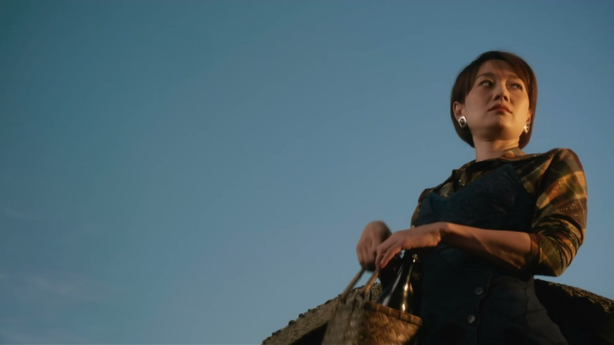
Drama Recap · 剧情图文总结
第 14 集 · 十三路之花
汪小姐被下放工厂，宝总与她定下排骨年糕之约；同一夜，他追忆初恋雪芝——十三路电车上的售票员，一段跨越十年的重逢与赌局
「时代列车全速前进，带来前所未见的风景，也将一幕幕人间聚散抛在身后。」黄河路的宝总，这一集站在两个女人中间：下放工厂的汪小姐，在排骨年糕留了一场「他来了就是答复」的约；而一段藏在十三路电车里的初恋，随着那个刚从香港回来的女人，连同 1978 年的站台灯光一起漫上来——他记着雪芝写过的每一笔字，也记着那晚他下电车、上快车，没有车票，只有十年。
第 14 集，阿宝的两段心事在同一个夜晚交汇。开场是夜东京的烟火气：玲子三十七岁，一边嘴硬一边想着「如意郎君」，阿宝劝不动她，只答应「等你一个人养老的时候，我来陪陪你」。屋顶上，阿宝望着半个卢湾区，想起儿时的贝蒂——时光如水，把人和事带来，又一并带走。
剧里的鸡毛蒜皮，往往是人生的缩影。这些情节不只是故事——当你在现实中遇到同样的处境时，它们能提醒你：先做什么、别做什么、怎么说才有效。
情境：爷叔劝阿宝把亏本的夜东京盘出去，阿宝念着玲子的恩情不肯放手。
情境：汪小姐把与宝总的去留，赌在「明晚八点半排骨年糕见不见面」上。
情境：雪芝从香港回来，怕阿宝过得比自己好，两人重逢即成较劲。
情境：阿宝对雪芝立誓「给我十年」，把逆袭当成回击她的赌注。
情境：阿宝下了十三路电车，登上时代的快车，把遗憾抛在身后。
情境：汪小姐被下放工厂，被安排清理垃圾、被师傅刁难，只回一句「我再想想办法」。
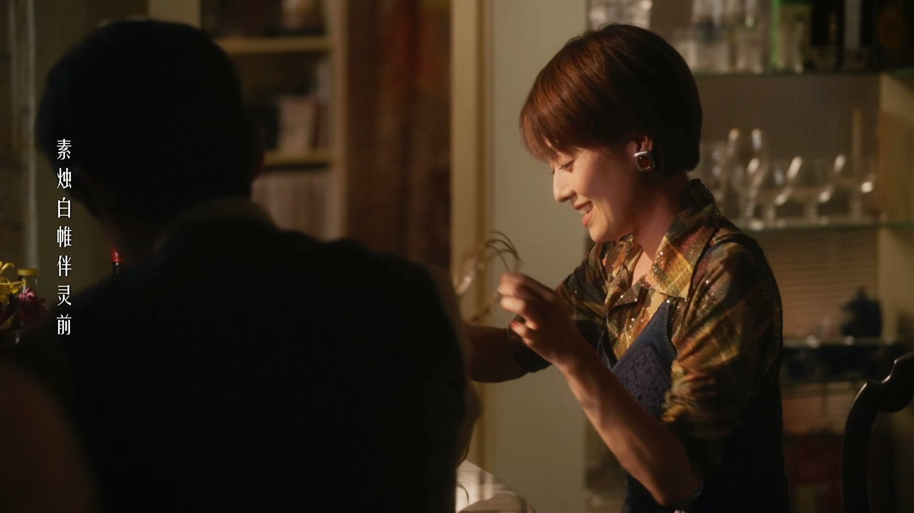
夜东京里，玲子端出青菜豆腐饭招呼阿宝，两个人像一对老夫老妻，隔桌斗起嘴来。楼下的女人日日唱歌，玲子笑骂，阿宝说倒也好听。玲子三十七岁，嘴上不饶人，心里却急：她说将来找到如意郎君，就要搬去小洋楼住。
阿宝打趣问她嫁不掉怎么办，玲子说那就赖在这里住一辈子；阿宝又笑她这种男人四十岁也讨不到老婆，玲子反唇相讥：喜欢我的男人多的是，我喜欢的男人，一个都逃不掉。
关键台词 · KEY QUOTES

阿宝和陶陶爬上屋顶修天线，闲话间说起阿宝过去的女朋友。陶陶问他为什么和女朋友上屋顶看风景，阿宝只说那都是从前的事。望着一片瓦片与半个卢湾区，阿宝忽然讲起童年。
小时候，他喜欢和邻居贝蒂一起爬屋顶，瓦片温热，贝蒂四岁就会弹钢琴，那些午后是他对童年永远的记忆。阿宝感慨：时光如水，把人和事带来，又一并带走——这些年被带走的，又何止贝蒂一个。
关键台词 · KEY QUOTES
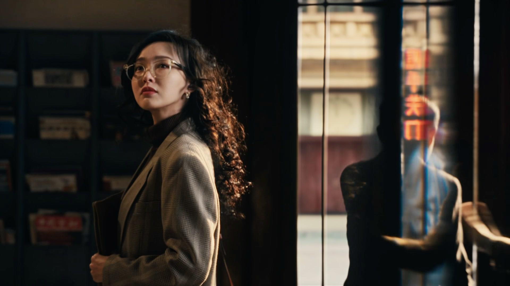
爷叔劝阿宝把亏本的夜东京盘出去，盘不出去就关掉。阿宝放不下：当初要不是玲子、要不是夜东京，就没有今天的宝总。爷叔叹口气，把话锋转到正事——汪小姐的处分下来了。
汪小姐要被下放工厂，能不能回 27 号，要看她的态度。她托爷叔传话：只要宝总身边还需要她，她就离开 27 号，他去哪儿她就去哪儿。阿宝思量再三，定下约定：明晚八点半，老地方排骨年糕，她来了他看到她，就是她的答复。
关键台词 · KEY QUOTES
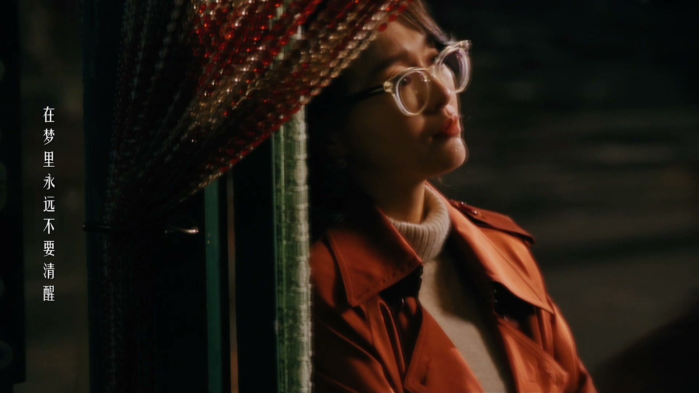
黄河路的卡拉OK厅里，阿宝点了一首《偷心》。他唱得投入，歌声里却全是心事——「是谁偷偷偷走我的心，不能分辨黑夜或天地」。
散场后，玲子听说阿宝出事了，追问陶陶。陶陶说，他认识阿宝到现在，他这副样子一共只见过一次——那是八七年。那一年，牵扯出阿宝的另一段往事。
关键台词 · KEY QUOTES
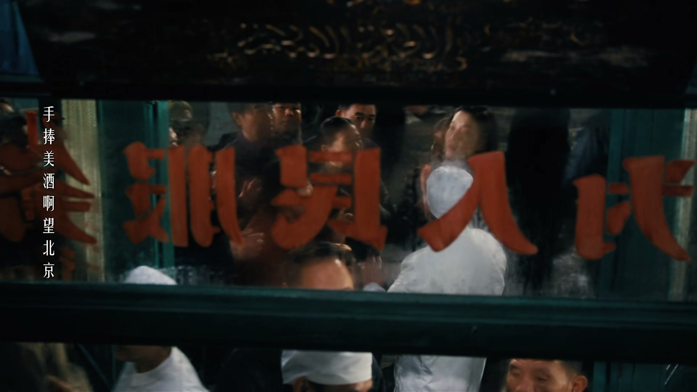
一段独白把时间拉回从前：「在认识汪小姐之前，我曾毫无保留地爱过一个人。」阿宝和她的第一次约会，在曹家渡的火锅店。小小的店堂十几个人围着圆台面坐满，门口挤满等位的客人。
阿宝硬闯进去占住位子：这个位子对他很重要，女朋友马上到。隔着火锅升腾的蒸汽，他始终看不清她的脸——直到十年之后，他还是没看清她的样子，却看清了自己。
关键台词 · KEY QUOTES
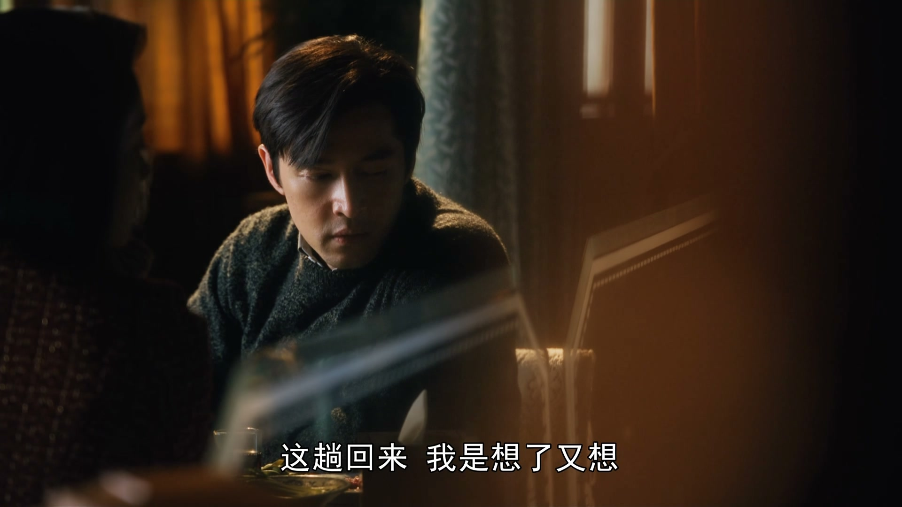
十年后，雪芝从香港回来，刚离婚。阿宝一眼认出她，笑她到底变成了香港人。雪芝说，这趟回来她是想了又想才决定的——回来，她肯定要来看他。她希望他过得好，却又怕他过得比她还好，怕自己后悔。
临别，雪芝亮出自己一个月的收入，问阿宝接下来十年拿什么来追。阿宝只回了一句：你给我十年时间，我会证明给你看，你是错的。雪芝应了一声：好的。
关键台词 · KEY QUOTES
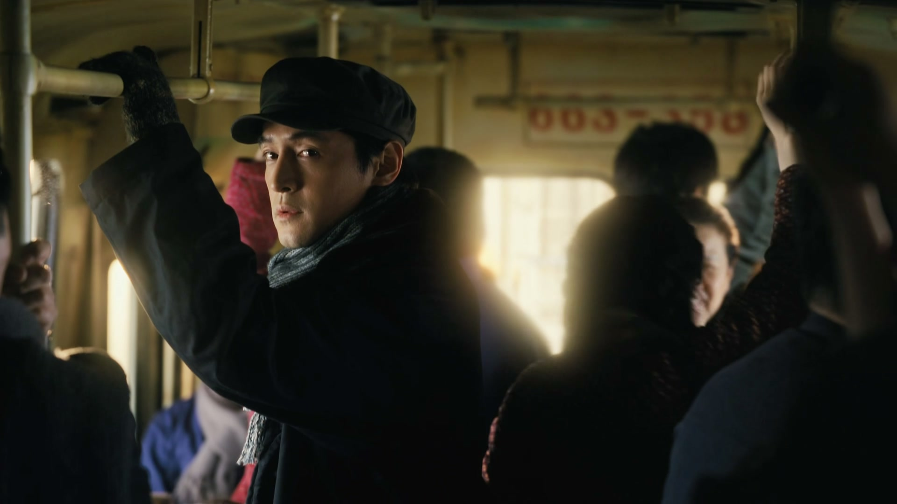
时光倒回 1978 年。阿宝是曹杨钟表零件厂的机修工，住在曹杨新村；雪芝二十岁，是十三路公交车的售票员，人称「十三路之花」。为了看她一眼，阿宝每次上中班都专门坐这趟电车。
雪芝在前门卖票时离司机近，不方便说话，两人只能偶尔对望；到下半夜她转到后门售票，两个人就能一路讲话。阿宝记得的，是他们一起看过的邮票、她写下的每一笔字和她头发的味道。
关键台词 · KEY QUOTES
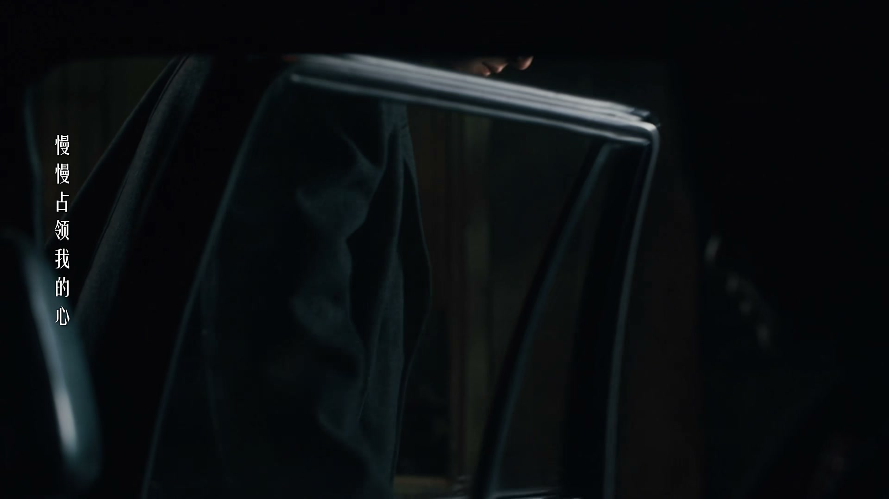
1978 年，雪芝的姐姐嫁去了香港，雪芝也随了过去。阿宝去送她，两个人约好：再看十年，十年后见。那是他与十三路电车、与那段少年爱情正式告别的夜晚。
「我终于明白，雪芝的车票只能让我留在过去。」那天晚上，阿宝下了十三路，上了迎面而来的另一辆快车——没有车票，只有十年。从那一刻起，机修工阿宝把自己交给了时代，用十年去成为另一个自己。
关键台词 · KEY QUOTES
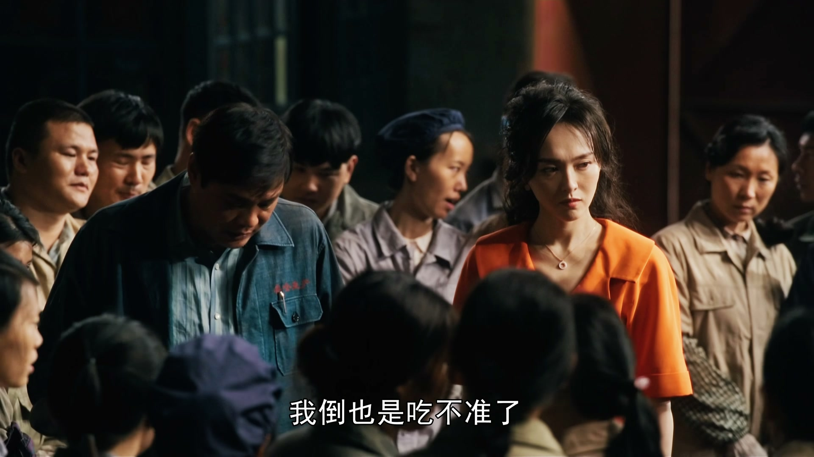
天刚亮，汪小姐就到下放的工厂报到。车间师傅一早接了七八个「照顾她」的电话，冷着脸打量她：27 号那套东西，放到这里来没用，跑到这里来是要干活的。
汪小姐说自己是被组织部安排来学习的，师傅不买账，直接派活：这就是你学习的地方，把这里的垃圾全部扔掉，理干净，他来检查。汪小姐没多话，低头干活。
关键台词 · KEY QUOTES
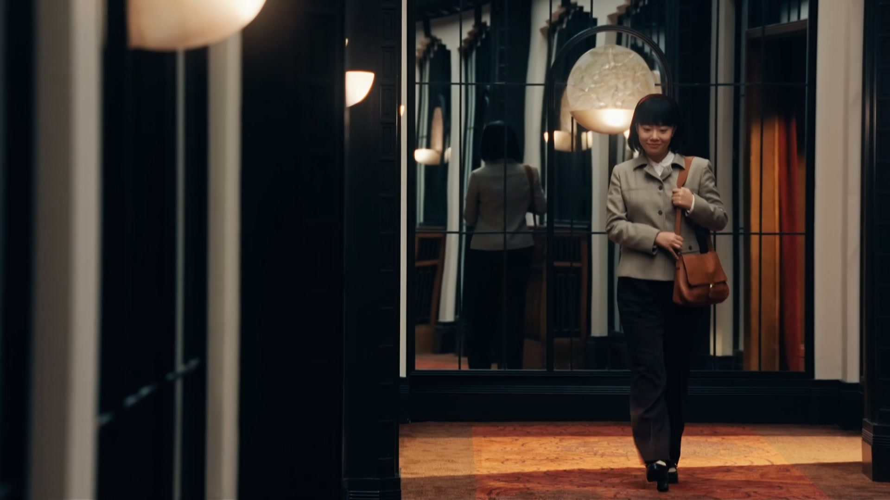
27 号派来新代表，接替汪小姐与宝总对接。他提着凯司令的西点登门拜见爷叔，爷叔婉拒：回头别人传来传去，说他们之间有财物往来，他也要被请进组织部了。
爷叔指点他：穿衣服要有派头，让人第一眼就注意到；还要拿出主人翁精神。末了说破：上海名牌单子下来，汪小姐不在，科长之位就是他的。阿宝回来见爷叔客气待客，一脸不悦，西点一口不碰：我不喜欢吃甜的。
关键台词 · KEY QUOTES
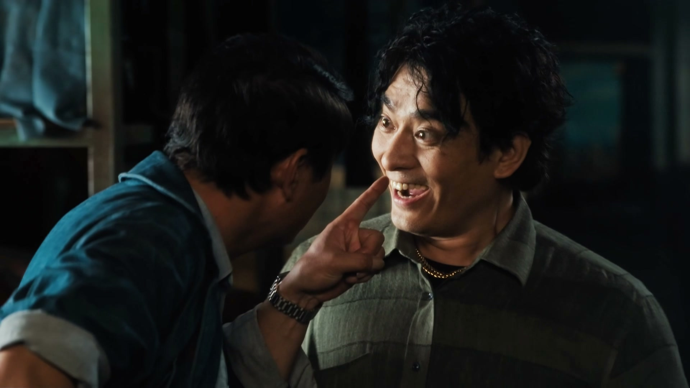
陶陶捧着芳妹做的冷馄饨到工厂探望汪小姐，心疼她「怎么能在这种地方」。师傅迎面撞上，一眼认出装馄饨的饭盒——上面刻着宝总的名字，一照就照出来了。
师傅又凶又横，扯着陶陶一顿数落，逼他认错，陶陶缩着脖子赔了不是，回头当着汪小姐的面抱怨那家伙凶得要吃人。汪小姐没接话，只说：知道了，我再想想办法。
关键台词 · KEY QUOTES
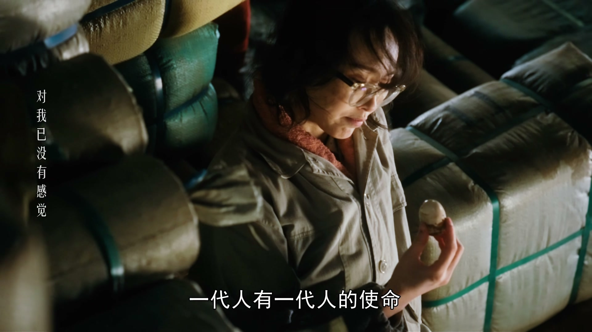
夜深了，阿宝的声音在音乐里响起，为这一集画上句点。时代的列车全速前进，带来前所未见的风景，也将一幕幕人间聚散，抛在身后。
一代人有一代人的使命，没有人可以独善其身。阿宝上了那趟没有车票的快车，汪小姐还困在工厂里——忙碌是遗憾的借口，明天又是新的一天。
关键台词 · KEY QUOTES
本集正处两难：汪小姐下放工厂等他表态，他却在歌声里追忆初恋雪芝，许下「给我十年」的赌约；守着亏本的夜东京不肯放，放不下玲子的恩情。
三十七岁为婚事发愁，嘴上泼辣、心里依恋阿宝；察觉阿宝状态不对，追问陶陶「出什么事了」。
被下放到工厂，仍保留傲气与韧性；把与宝总的去留押在排骨年糕之约上，在工厂被刁难只回一句「我再想想办法」。
十三路公交车的售票员，十年前远嫁香港、如今离了婚回来；重逢时用收入较劲，留下一句「你拿什么来追」。
劝阿宝关掉亏本夜东京；替汪小姐传话、替27号安排新代表，教他「穿衣要有派头、要有主人翁精神」，并点破科长之位。
屋顶上陪阿宝说话，察觉他异样、记起1987年；捧着芳妹的冷馄饨去工厂探望汪小姐，被师傅抓个正着。
汪小姐把去留押在明晚八点半的一顿排骨年糕上——「她来了我看到她，就是她的答复」，一顿饭成了两个人关系的分水岭。
黄河路卡拉OK，阿宝一首《偷心》唱出心事；陶陶说他这副样子只在八七年见过一次。
十年后，那个「十三路之花」从香港回来，刚离婚。她怕他过得比自己好，他当场许她十年——「我会证明给你看，你是错的」。
1978年，机修工阿宝为了看一眼售票员雪芝，专门坐十三路电车陪她上中班；雪芝在后门售票的深夜，是他记忆里最亮的一盏灯。
「我终于明白，雪芝的车票只能让我留在过去。」阿宝下电车、上快车，把十年赌在成为宝总这条路上。
阿宝许下「明晚八点半排骨年糕」之约，汪小姐会不会来？这一面，将决定她与宝总、与27号的走向。
雪芝亮出一个月收入，问阿宝「拿什么来追」；阿宝「给我十年」的承诺才刚刚起跑，这段较量远未结束。
爷叔说新代表「是要当科长的人了」——27号的人事更替已成定局，汪小姐还能回去吗？
阿宝说「这些年被带走的，又何止贝蒂一个」。这个儿时邻居的名字，是否会在他的往事后文里再次浮现？